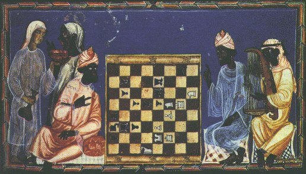

History of Chess

Origins
The earliest known form of Chess was called Chatarung. Chatarung was a two player war game that was invented in India sometime between 600 CE and 1,000 CE. From here it spread to Europe by Persian traders. At this time the game was very different from what we know as chess today. It used to be that the weakest piece on the board was the queen. This resulted in a very slow-paced game.
Changes
It was during the Fifteenth Century that Chess started to become more like what we play today. With the advent of the printing press in the Sixteenth Century, new rules and standards were easier to define.
In the United States, Chess popularity was spear-headed by none other than Benjamin Franklin. Franklin wrote an article called "The Morals of Chess" that looks into the social and intellectual aspects of those that play Chess. With Chess growing in popularity, there is much to be said about its effect on Americans. In the mid to late Nineteenth Century Paul Morphy would become recognized as America's first Chess legend. He was the first of many more American chess experts to come.
Present Day
Today we are seeing some very interesting trends in the world of Chess. With continual advancements in technology, Chess is being both re-invented and lost at the same time. Some new computer programs are creating new innovative ways to play chess. But at the same time games like StarCraft are so popular that many have forgotten about Chess. In spite of this, many are working very hard to share Chess with as many people as possible.